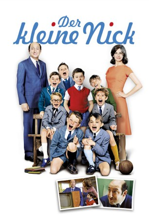
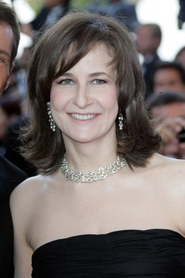
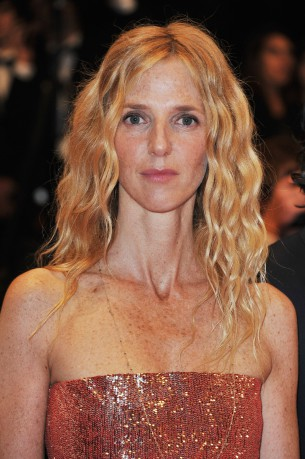
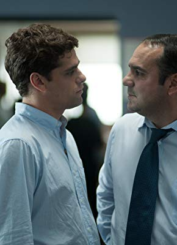
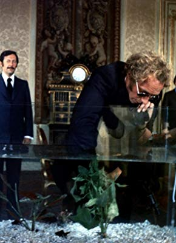

#2013 Der Kleine Nick
Alternativ: Little Nicholas (Englischer Titel)
 gesehen am 30.08.2016
gesehen am 30.08.2016
 
 IMDB-Wertung: 7.2 / 10
IMDB-Wertung: 7.2 / 10  Metascore: 0
Metascore: 0 
Als einer von seinen Klassenkameraden erzählt, dass sich daheim alles nur noch um das Neugeborene dreht und er bald nicht mehr zum Unterricht erscheint, glauben alle, ihr Kumpel sei von seinen Eltern im Wald ausgesetzt worden. Der kleine Nick ist ganz besonders aufgeschreckt, denn in einem Gespräch seiner Eltern hat er gehört, dass seine Mama schwanger ist. Um dem Schicksal, im Wald ausgesetzt zu werden, zu entgehen, will er sich als perfektes Kind bewähren. Gemeinsam mit seinen Freunden bringt er die Wohnung auf Vordermann und will sogar einen Gangster anheuern, der den zukünftigen kleinen Rivalen entführen soll.
Jahr: 2009
Dauer: 91 Minuten
FSK: 0
Land: Frankreich Studio: Central FilmTonspuren:
Untertitel: Deutsch,
Auflösung: 1080p (1920x1040) Größe: 6225 MB
Genre: Komödie, Familie
Regisseur: Laurent Tirard
Drehbuch: Laurent Tirard, Grégoire Vigneron, Laurent Tirard, Grégoire Vigneron, Alain Chabat
Soundtrack: Klaus Badelt
Darsteller:
-  Valérie Lemercier als La mère de Nicolas
 Kad Merad als Le père de Nicolas
Kad Merad als Le père de Nicolas-  Sandrine Kiberlain als La maîtresse
 François Damiens als Blédur
François Damiens als Blédur Louise Bourgoin als La fleuriste
Louise Bourgoin als La fleuriste Gérard Jugnot als Gérard Jugnot, le chef de la chorale
Gérard Jugnot als Gérard Jugnot, le chef de la chorale- Sophie-Charlotte Husson als Mme Courteplaque
- Maxime Godart als Nicolas
-  François-Xavier Demaison als Le bouillon
-  Michel Duchaussoy als Le directeur
- Daniel Prévost als M. Moucheboume
 Michel Galabru als Le ministre
Michel Galabru als Le ministre- Anémone als Mlle Navarin
- Vincent Claude als Alceste
- Charles Vaillant als Geoffroy
- Victor Carles als Clotaire
- Benjamin Averty als Eudes
- Germain Petit Damico als Rufus
- Damien Ferdel als Agnan
- Virgile Tirard als Joachim
- Elisa Heusch als Marie-Edwige
- Nathalie Cerda als Mme Moucheboume
- Renaud Rutten als Moniteur auto-école
- Éric Berger als Albert, le majordome
- Serge Riaboukine als Francis Leborgne
- Jean-Michel Lahmi als Le gangster qu sort de prison
- Didier Raymond als Médecin 1
- Christian Taponard als Médecin 2
- Alain Sachs als Médecin 3
- Marc Faure als Médecin 4
- Yves-Robert Viala als Médecin 5
- Dominique Jayr als La vieille bourgeoise
- Isabelle Jacquet als La mère d'Agnan
- Françoise Bertin als La vieille dame qui joue à la roulette
- Cédric Eeckhout als Le cadre
- Cyril Couton als L'oncle de Nicolas
- Marie Berto als La tante de Nicolas
- Olga Sékulic als Secrétaire 1
- Virginia Anderson als Secrétaire 2
- Nicolas Vallée als Le flic
- Sophie Balabanian als L'amie des Courteplaque
- Simon Goscinny du Chatenet als Un élève salle des examens
- Salomé Goscinny du Chatenet als Une copine de Marie-Edwige
- Michaël Lucas als Un élève de la classe
- Bobette Jouret als La grand-mère de Nicolas
- Philippe Chauvin als Le mécanicien
- Jean-Pierre Pivolot als Le photographe
- Laura Boujenah als La sage-femme
- Dominique Fouilland als Le nouveau voisin
- Jean Hérin als Le ministre banquet
Datei: X:\2-Dilogie(G-M)\Kleine Nick\Kleine Nick, Der (2009, FSK0, 1920x1040).mkv seit 22.09.2015
Festplatte: HD Collection-2(A-Z)-3(A-M)
 Alle Filme aus Gruppe '2-Dilogie(G-M)\Kleine Nick'
Alle Filme aus Gruppe '2-Dilogie(G-M)\Kleine Nick'